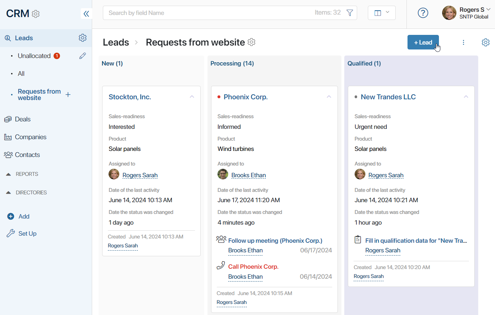
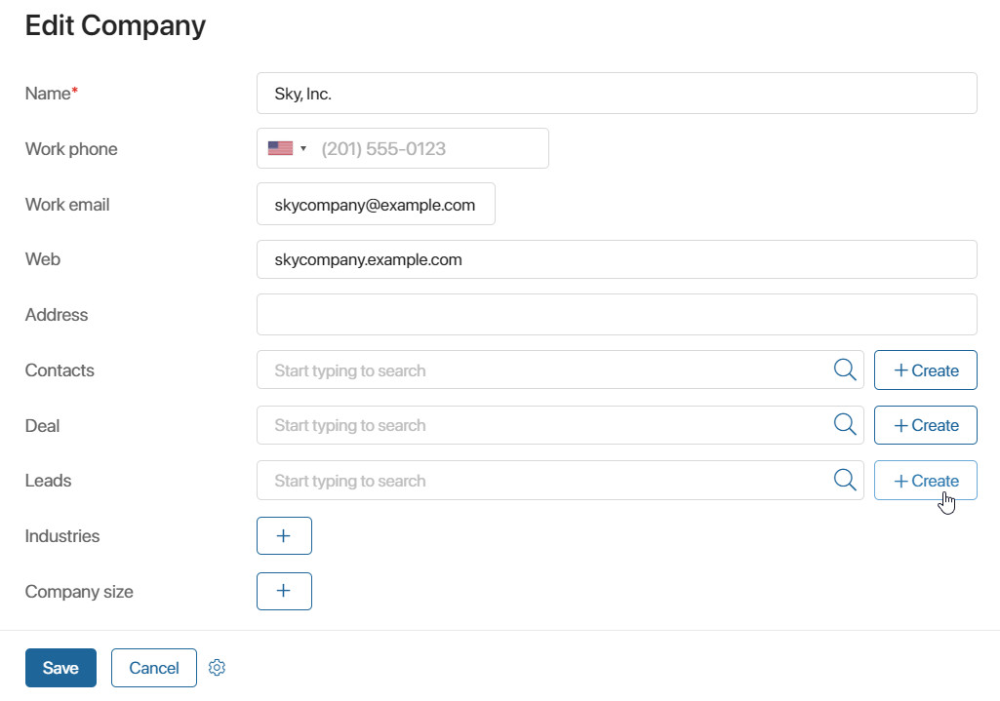
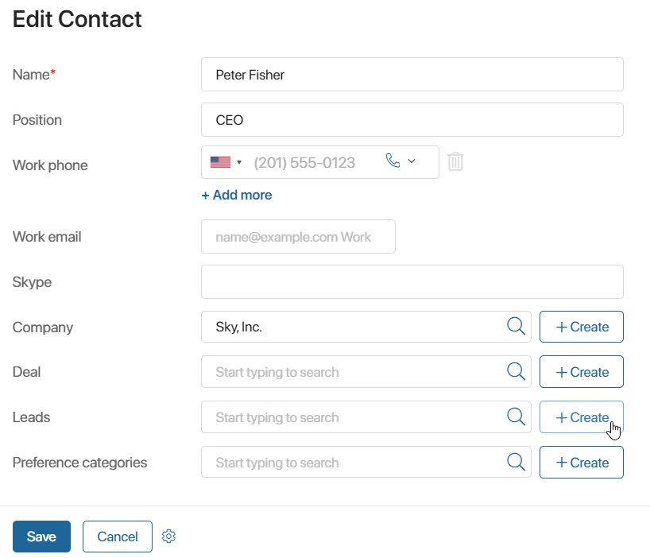
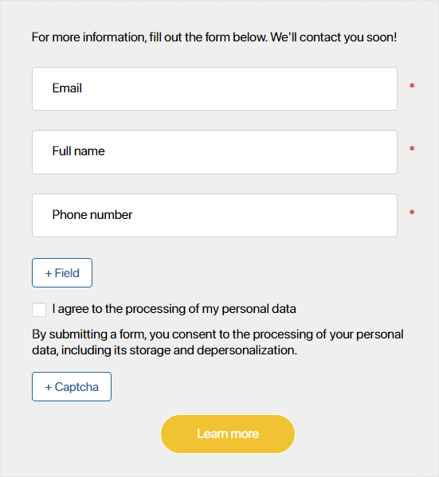
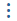
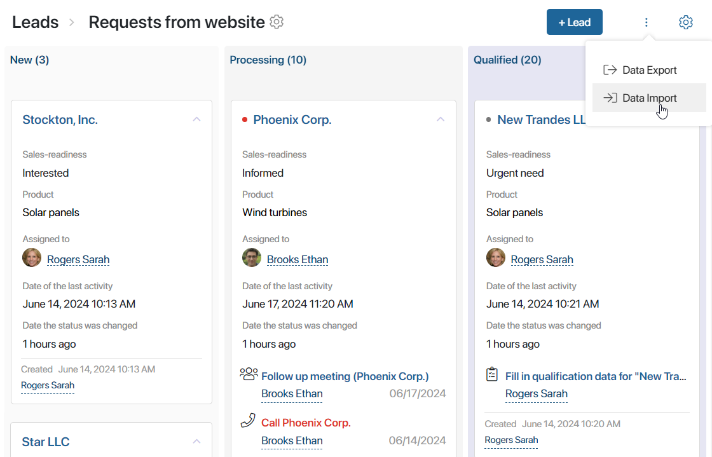
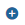
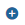
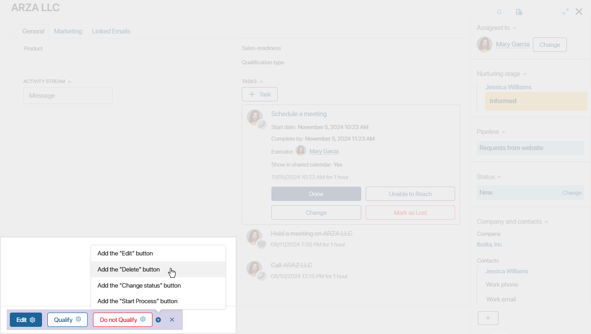
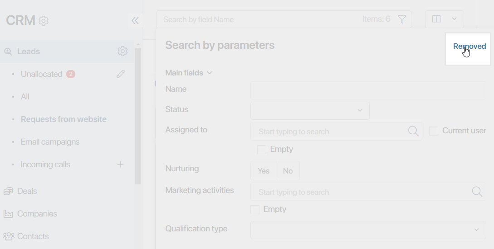

BRIX allows you to create leads manually, add them automatically using web forms and the provided API, or import them from .xlsx or .csv files. These options are described below.
Create a lead manually
You can add a lead manually in one of the following ways:
- Go to CRM > Leads. Open the pipeline you need. In the top right corner of the page, click the + Lead button.

- Open the creation or editing form of a company and click the + or + Create button next to the Leads field. The new lead will be automatically linked to this company.

- Open the creation or editing form of a contact and click the + or +Create button next to the Leads field. The lead you create in this way will be linked to the corresponding item of the Contacts app.

When you create a new lead, the only required field is Name. By default, the user who creates the lead is specified in the Assigned to field. You can change or delete the user in this field.
The other fields can be specified later on the lead’s page.
Create a lead using the API
You can use the API to create new items of the Leads app, adding them to a specific pipeline. The request parameters can be found in the Create app item article. Read more about the Web API features in BRIX Public API.
Create a lead using a web form
You can create a web form and add it to your website. When a client fills out the form, a new lead storing the data they entered will be created in the CRM workspace.
In the web form’s settings, you can specify a pipeline to which the newly created lead needs to be added. Read more about web form settings in the Web forms article.

Import leads from a file
You can quickly add a large amount of data to BRIX apps by importing it from an .xlsx or .csv file. For example, you can import an existing lead database from one company to another.
To start the import, go to CRM > Leads. In the upper right corner, click the  icon and select Data Import.

In the window that opens, select an .xlsx or a .csv file from your PC. You can also use a file uploaded to the system. To do that, click the  icon on the right and then click Select from the Files Workspace. When you choose a file, click Import.
icon on the right and then click Select from the Files Workspace. When you choose a file, click Import.
Read more about uploading data to the system in the Data import article.
Delete a lead
To delete a lead, you need to add the Delete button to the lead’s page.
начало внимание
Only users included in the Administrators group can add buttons to the lead’s page.
конец внимание
Open the view page of a lead and click the  icon in the bottom left corner. The  icon will appear next to the default buttons. Click the icon and select Add the “Delete” button.
icon in the bottom left corner. The  icon will appear next to the default buttons. Click the icon and select Add the “Delete” button.

The button will be added to the page. Only users having the permission to delete app items will be able to use it.
Read more about adding buttons to pages in the Manage buttons on app item pages article.
View previously deleted leads
Deleted leads are not shown in the pipeline. To view them, first open the pipeline you need. In the search bar at the top of the page, click the  icon. In the top right corner of the window that appears, click Removed.
icon. In the top right corner of the window that appears, click Removed.

The page with a list of removed leads will open.
To see all deleted leads as a list, change the view to Table.